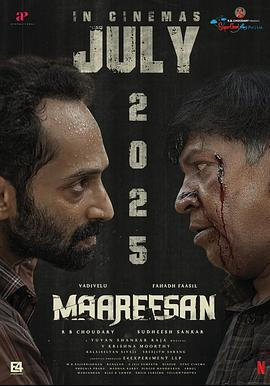

7.3
妄人妄途
Maareesan
2025
印度
评分 7.3
导演:
苏迪希斯·桑卡尔
演员:
法哈德·法西尔 / 瓦迪维卢 / 柯维伊·萨拉拉 / 维韦克·普拉萨纳 / 西塔拉 / 利文斯顿 / 雷努卡
类型:
剧情,喜剧,惊悚
剧情简介
迈阿拉雅山脚下的赛道弯曲，一辆破旧摩托、一个浑然不知命运的人物——达雅（法哈德·法西尔 饰）从狱中获释，却立即重返盗窃生活。他在零星月光下骑入一个宁静庄园，只为偷取机遇，却意外牵上患有阿尔茨海默症的维赖尤德汉·皮莱（瓦迪维卢 饰）。初见时，老人与他对视却笑称：“你是库马尔。”达雅一愣，原本算计的偷窃之路就此偏移。 两人开始一段看似旅途、实为赎罪的旅程：从塔米尔南德省的纳格尔科尔出发，跨越路面裂缝与森林残光驶向蒂鲁瓦纳马莱。达雅打着利用的算盘，却在共同驾驶、深夜取款、道路被封的恐慌中，看到维赖尤德汉那层病症之外的执着。他并非如表面那般痴呆，而是怀揣复仇意志，寻找曾令妻子绝望的真凶。 影片在喜剧情境中植入惊悚与道德模糊：当达雅发现自己真正被卷入的，不是一次简单的抢劫，而是一场关于正义与复仇的黑色旅程；当维赖尤德汉挥刀、当手机自动拨号、当车尾灯在夜雾中消失，观众才意识到，他们站在的不是“赎罪之路”，而是“救赎之路”的岔路口。 整部影片在壮丽公路、雨夜车顶、旧银行大厅的冷光与阴影交替中展开。导演以缓慢却坚定的节奏讲述：每一次加速，是对过往的逃离；每一次停歇，是对未来的思考。正如片中所述：两个人驶进未知，却驶向各自的真实。若你愿意接受一段比套路更复杂的旅程，这部作品值得一看。